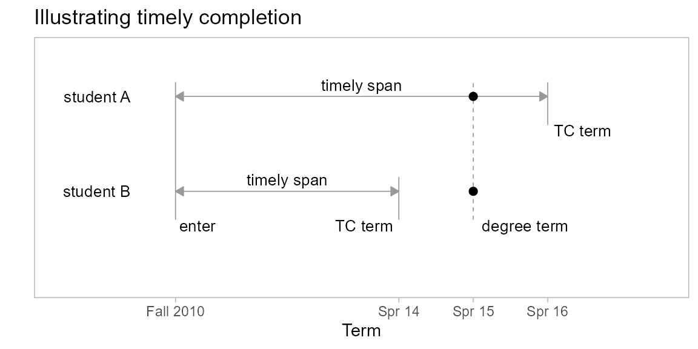
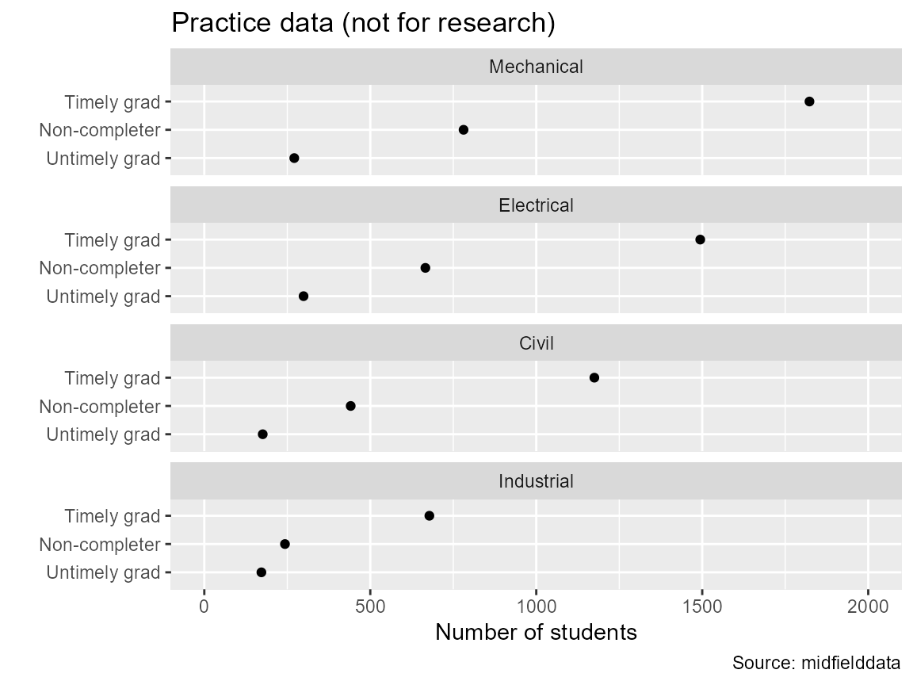
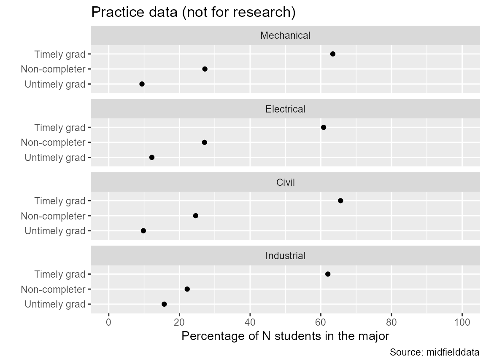

Timely completion
Richard Layton
2021-06-29
Source:vignettes/art-030-timely-completion.Rmd
art-030-timely-completion.RmdIntroduction
Program completion—a key component of most persistence measures—must be timely, that is, occur within a specific span of years. Our default set point is six years—150% of the typical “scheduled” span of four years.
Students who complete their programs later than their timely completion term (introduced in the Data sufficiency vignette). are reclassified as non-graduates in most persistence metrics.
In this vignette, we introduce the timely completion criterion and related midfieldr functions.
- timely completion (TC) term
- The last term in which program completion would be considered timely for a given student. For example, the TC term in many cases is defined as the admission term plus 6 years.
- timely completion criterion
- Graduates completing their program later than their TC term are grouped with non-graduates for purposes of computing a persistence metric.
In the figure we compare the history of two students: both enter in Fall 2010 and both graduate in Spring 2015. We assume a basis of 6 years for timely completion.
- Student A is a first-time-in-college student. Their TC term is 6 academic years later, in Spring 2016.
- Student B is a transfer student, entering as a junior. Having already satisfied 2 years of program requirements, their TC term is 4 years later, in Spring 2014.

Student A’s degree term is before their TC term. Their completion is timely and they would be counted among the program graduates.
However, Student B’s degree term is after their TC term. Their completion is not timely and their graduation classification (for purposes of computing the persistence metric only) would be converted from graduate to non-graduate.
Outline
- Start with the case study students (
study_student) - Determine whether completion is timely
- Summarize the pre-metric criteria
- Explore: Compare programs by completion status
This vignette uses
midfieldr functions
packages
# Packages used
library("midfieldr")
library("midfielddata")
library("data.table")
library("ggplot2")
# Optional code to control data.table printing
options(
datatable.print.nrows = 10,
datatable.print.topn = 5,
datatable.print.class = TRUE
)data
# Load data tables from midfielddata
data(student, term, degree)Case study students
Having applied the data sufficiency criterion to our case study programs, we saved the result in the midfieldr package as the data set study_student. These students all have timely completion terms within the range of data provided by their institutions.
Review its help page by running
? study_studentReview the data frame,
study_student
#> mcid institution cip6 program race sex
#> <char> <char> <char> <char> <char> <char>
#> 1: MID25783197 Institution M 140801 Civil White Male
#> 2: MID25783441 Institution M 140801 Civil White Male
#> 3: MID25783553 Institution M 140801 Civil White Male
#> 4: MID25784209 Institution M 140801 Civil International Male
#> 5: MID25784489 Institution M 140801 Civil Asian Female
#> ---
#> 8215: MID26692926 Institution L 143501 Industrial White Male
#> 8216: MID26693368 Institution L 143501 Industrial White Male
#> 8217: MID26695626 Institution L 143501 Industrial White Male
#> 8218: MID26696116 Institution L 143501 Industrial White Female
#> 8219: MID26696429 Institution L 143501 Industrial White Female
#> timely_term data_sufficiency
#> <char> <lgcl>
#> 1: 19923 TRUE
#> 2: 19973 TRUE
#> 3: 20073 TRUE
#> 4: 20003 TRUE
#> 5: 19943 TRUE
#> ---
#> 8215: 20153 TRUE
#> 8216: 20143 TRUE
#> 8217: 20143 TRUE
#> 8218: 20153 TRUE
#> 8219: 20153 TRUEDetermine whether completion is timely
We use add_timely_term() to estimate the timely completion term. See the Data sufficiency vignette for additional details about this function.
# Estimate the timely completion term
DT <- add_timely_term(study_student, midfield_term = term)
DT
#> mcid institution cip6 program race sex
#> <char> <char> <char> <char> <char> <char>
#> 1: MID25783178 Institution M 143501 Industrial Black Male
#> 2: MID25783197 Institution M 140801 Civil White Male
#> 3: MID25783388 Institution M 141901 Mechanical White Male
#> 4: MID25783441 Institution M 140801 Civil White Male
#> 5: MID25783491 Institution M 141001 Electrical White Male
#> ---
#> 8215: MID26696958 Institution L 141901 Mechanical White Male
#> 8216: MID26696967 Institution L 141901 Mechanical White Male
#> 8217: MID26697163 Institution L 141901 Mechanical Hispanic/Latinx Male
#> 8218: MID26697444 Institution L 141901 Mechanical White Male
#> 8219: MID26697447 Institution L 141001 Electrical Asian Male
#> data_sufficiency timely_term
#> <lgcl> <char>
#> 1: TRUE 20003
#> 2: TRUE 19923
#> 3: TRUE 19923
#> 4: TRUE 19973
#> 5: TRUE 20013
#> ---
#> 8215: TRUE 20163
#> 8216: TRUE 20153
#> 8217: TRUE 20143
#> 8218: TRUE 20153
#> 8219: TRUE 20163Now that our working data frame has a timely_term column, we use add_completion_timely() to add a logical variable (TRUE/FALSE) that answers the question, “Is a program completion timely?” View its help page by running,
? add_completion_timelyThis function has two required arguments and one optional details argument. The input dframe must have a timely_term column. The details, in this case, add two extra columns to show whether a program was completed, and if so, in what term.
# Add the completion timely column
DT <- add_completion_timely(
dframe = DT,
midfield_degree = degree,
details = TRUE
)
# Examine the result
DT
#> mcid institution cip6 program race sex
#> <char> <char> <char> <char> <char> <char>
#> 1: MID25783178 Institution M 143501 Industrial Black Male
#> 2: MID25783197 Institution M 140801 Civil White Male
#> 3: MID25783388 Institution M 141901 Mechanical White Male
#> 4: MID25783441 Institution M 140801 Civil White Male
#> 5: MID25783491 Institution M 141001 Electrical White Male
#> ---
#> 8215: MID26696958 Institution L 141901 Mechanical White Male
#> 8216: MID26696967 Institution L 141901 Mechanical White Male
#> 8217: MID26697163 Institution L 141901 Mechanical Hispanic/Latinx Male
#> 8218: MID26697444 Institution L 141901 Mechanical White Male
#> 8219: MID26697447 Institution L 141001 Electrical Asian Male
#> data_sufficiency timely_term term_degree completion completion_timely
#> <lgcl> <char> <char> <lgcl> <lgcl>
#> 1: TRUE 20003 20001 TRUE TRUE
#> 2: TRUE 19923 19911 TRUE TRUE
#> 3: TRUE 19923 <NA> FALSE FALSE
#> 4: TRUE 19973 19963 TRUE TRUE
#> 5: TRUE 20013 20001 TRUE TRUE
#> ---
#> 8215: TRUE 20163 <NA> FALSE FALSE
#> 8216: TRUE 20153 20141 TRUE TRUE
#> 8217: TRUE 20143 20133 TRUE TRUE
#> 8218: TRUE 20153 20151 TRUE TRUE
#> 8219: TRUE 20163 20154 TRUE TRUEInterpreting the result:
-
TRUEin thecompletion_timelycolumn indicates that a student completed their program (completion = TRUE) and their degree term is no later than their timely completion term (term_degree <= timely_term). -
FALSEin thecompletion_timelycolumn indicates non-completion (completion = FALSE) or a degree term later than the timely completion term (term_degree > timely_term).
With details FALSE, only the completion_timely column is added.
# With details FALSE
DT <- add_completion_timely(
dframe = DT,
midfield_degree = degree,
details = FALSE
)
# Examine the result
DT
#> mcid institution cip6 program race sex
#> <char> <char> <char> <char> <char> <char>
#> 1: MID25783178 Institution M 143501 Industrial Black Male
#> 2: MID25783197 Institution M 140801 Civil White Male
#> 3: MID25783388 Institution M 141901 Mechanical White Male
#> 4: MID25783441 Institution M 140801 Civil White Male
#> 5: MID25783491 Institution M 141001 Electrical White Male
#> ---
#> 8215: MID26696958 Institution L 141901 Mechanical White Male
#> 8216: MID26696967 Institution L 141901 Mechanical White Male
#> 8217: MID26697163 Institution L 141901 Mechanical Hispanic/Latinx Male
#> 8218: MID26697444 Institution L 141901 Mechanical White Male
#> 8219: MID26697447 Institution L 141001 Electrical Asian Male
#> data_sufficiency timely_term completion_timely
#> <lgcl> <char> <lgcl>
#> 1: TRUE 20003 TRUE
#> 2: TRUE 19923 TRUE
#> 3: TRUE 19923 FALSE
#> 4: TRUE 19973 TRUE
#> 5: TRUE 20013 TRUE
#> ---
#> 8215: TRUE 20163 FALSE
#> 8216: TRUE 20153 TRUE
#> 8217: TRUE 20143 TRUE
#> 8218: TRUE 20153 TRUE
#> 8219: TRUE 20163 TRUELike the other midfieldr add_* functions, existing columns are deleted or overwritten if they have the same name as the variables to be added. In this case, the term_degree and completion columns are deleted and the completion_timely column is overwritten.
Exercises
If we start with the result from above and add the details,
# Assign a new memory location
x <- copy(DT)
# Add the details
x <- add_completion_timely(
dframe = x,
midfield_degree = degree,
details = TRUE
)Then order the rows and examine the last 20 rows only,
# Examine the final 20 rows
options(datatable.print.topn = 20)
x <- x[order(cip6)]
x <- x[8180:8199]- Find a row in which
completion_timelyis TRUE. Confirm that the student completed their program and that their degree term precedes their TC term. - Find a row in which
term_degreeis NA, that is, the student did not complete their program. Confirm that theircompletion_timelyvalue is FALSE.
- Find a row with
completionTRUE butcompletion_timelyFALSE. Confirm that the student’s degree term overshoots their TC term.
Summarize the pre-metric criteria
At this point in the case study example, we have illustrated the two criteria typically applied before developing any persistence metric, i.e., “pre-metric” criteria. Both depend on the estimate of the timely completion (TC) term:
- data sufficiency criterion
- Excludes some students, limiting the study to those whose TC terms are within the range of data provided by their institution.
- timely completion criterion
- Retains all students but reclassifies completers whose degree terms overshoot their TC terms as non-graduates.
Having applied both criteria, our data are ready for use in a persistence metric.
Explore: Compare programs by completion status
In a typical persistence metric, the untimely graduates and the non-completers are grouped together as non-graduates. However, we keep them separate in this example to explore the data. We construct a new status column with three possible values:
- Timely grad
- Untimely grad
- Non-completer
# Need the completion column for this application
DT <- add_completion_timely(
dframe = DT,
midfield_degree = degree,
details = TRUE
)A timely graduate completed their program no later than their timely completion term.
# Timely grads
DT[
completion == TRUE & completion_timely == TRUE,
status := "Timely grad"
]A untimely graduate completed their program after their timely completion term.
# Untimely grads
DT[
completion == TRUE & completion_timely == FALSE,
status := "Untimely grad"
]A non-completer did not complete their program.
# Non-completers
DT[completion == FALSE, status := "Non-completer"]Remove some unnecessary columns for less cluttered viewing.
# Improve viewing
cols_we_want <- c("cip6", "completion", "completion_timely", "status")
DT <- DT[order(cip6), ..cols_we_want]
# Examine the result
options(datatable.print.topn = 12)
DT
#> cip6 completion completion_timely status
#> <char> <lgcl> <lgcl> <char>
#> 1: 140801 TRUE TRUE Timely grad
#> 2: 140801 TRUE TRUE Timely grad
#> 3: 140801 FALSE FALSE Non-completer
#> 4: 140801 FALSE FALSE Non-completer
#> 5: 140801 TRUE TRUE Timely grad
#> 6: 140801 TRUE TRUE Timely grad
#> 7: 140801 TRUE TRUE Timely grad
#> 8: 140801 TRUE TRUE Timely grad
#> 9: 140801 TRUE TRUE Timely grad
#> 10: 140801 FALSE FALSE Non-completer
#> 11: 140801 TRUE TRUE Timely grad
#> 12: 140801 FALSE FALSE Non-completer
#> ---
#> 8208: 143501 TRUE FALSE Untimely grad
#> 8209: 143501 TRUE FALSE Untimely grad
#> 8210: 143501 FALSE FALSE Non-completer
#> 8211: 143501 TRUE TRUE Timely grad
#> 8212: 143501 TRUE TRUE Timely grad
#> 8213: 143501 TRUE TRUE Timely grad
#> 8214: 143501 TRUE TRUE Timely grad
#> 8215: 143501 TRUE TRUE Timely grad
#> 8216: 143501 FALSE FALSE Non-completer
#> 8217: 143501 TRUE TRUE Timely grad
#> 8218: 143501 TRUE TRUE Timely grad
#> 8219: 143501 TRUE TRUE Timely gradRecall that we have a data frame of case-study program CIP codes and names in the study_program data set. To review its hep page, run
? study_programJoin the program names to our working data frame and drop unnecessary columns,
# Join program names
DT <- merge(DT, study_program, by = "cip6", all.x = TRUE)
# Keep columns we need for grouping and summarizing
cols_we_want <- c("status", "program")
DT <- DT[, ..cols_we_want]
# Examine the result
DT
#> status program
#> <char> <char>
#> 1: Timely grad Civil
#> 2: Timely grad Civil
#> 3: Non-completer Civil
#> 4: Non-completer Civil
#> 5: Timely grad Civil
#> 6: Timely grad Civil
#> 7: Timely grad Civil
#> 8: Timely grad Civil
#> 9: Timely grad Civil
#> 10: Non-completer Civil
#> 11: Timely grad Civil
#> 12: Non-completer Civil
#> ---
#> 8208: Untimely grad Industrial
#> 8209: Untimely grad Industrial
#> 8210: Non-completer Industrial
#> 8211: Timely grad Industrial
#> 8212: Timely grad Industrial
#> 8213: Timely grad Industrial
#> 8214: Timely grad Industrial
#> 8215: Timely grad Industrial
#> 8216: Non-completer Industrial
#> 8217: Timely grad Industrial
#> 8218: Timely grad Industrial
#> 8219: Timely grad IndustrialGroup and summarize,
# Count students by program and completion status
DT <- DT[, .(N_group = .N), by = .(program, status)]
DT
#> program status N_group
#> <char> <char> <int>
#> 1: Civil Timely grad 1175
#> 2: Civil Non-completer 441
#> 3: Civil Untimely grad 176
#> 4: Electrical Timely grad 1494
#> 5: Electrical Non-completer 666
#> 6: Electrical Untimely grad 299
#> 7: Mechanical Non-completer 781
#> 8: Mechanical Untimely grad 271
#> 9: Mechanical Timely grad 1823
#> 10: Industrial Timely grad 678
#> 11: Industrial Non-completer 243
#> 12: Industrial Untimely grad 172In anticipation of the graph, we condition these multiway data with the categorical columns converted to factors with levels ordered by the median values of N_group.
# Create factors with ordered levels
mw <- condition_multiway(DT)
mw
#> program status N_group
#> <fctr> <fctr> <num>
#> 1: Civil Timely grad 1175
#> 2: Civil Non-completer 441
#> 3: Civil Untimely grad 176
#> 4: Electrical Timely grad 1494
#> 5: Electrical Non-completer 666
#> 6: Electrical Untimely grad 299
#> 7: Mechanical Non-completer 781
#> 8: Mechanical Untimely grad 271
#> 9: Mechanical Timely grad 1823
#> 10: Industrial Timely grad 678
#> 11: Industrial Non-completer 243
#> 12: Industrial Untimely grad 172Graph the numbers of students by completion status and program.
# Graph the counts
ggplot(mw, aes(x = N_group, y = status)) +
facet_wrap(vars(program), ncol = 1, as.table = FALSE) +
scale_x_continuous(limits = c(0, 2000)) +
geom_point() +
labs(
x = "Number of students",
y = "",
title = "Practice data (not for research)",
caption = "Source: midfielddata"
)
A more useful comparison might be as a percentage of the total number in each program (panel).
# Compute percentage of total in a program
mw[, N_program := sum(N_group), by = .(program)]
mw[, pct_of_program := round(100 * N_group / N_program, 1)]
mw
#> program status N_group N_program pct_of_program
#> <fctr> <fctr> <num> <num> <num>
#> 1: Civil Timely grad 1175 1792 65.6
#> 2: Civil Non-completer 441 1792 24.6
#> 3: Civil Untimely grad 176 1792 9.8
#> 4: Electrical Timely grad 1494 2459 60.8
#> 5: Electrical Non-completer 666 2459 27.1
#> 6: Electrical Untimely grad 299 2459 12.2
#> 7: Mechanical Non-completer 781 2875 27.2
#> 8: Mechanical Untimely grad 271 2875 9.4
#> 9: Mechanical Timely grad 1823 2875 63.4
#> 10: Industrial Timely grad 678 1093 62.0
#> 11: Industrial Non-completer 243 1093 22.2
#> 12: Industrial Untimely grad 172 1093 15.7Repeat the graph, but with percentage of program instead of numbers per program. The rows and panels remain ordered by the factor levels.
# Graph percentages
ggplot(mw, aes(x = pct_of_program, y = status)) +
facet_wrap(vars(program), ncol = 1, as.table = FALSE) +
scale_x_continuous(limits = c(0, 100), breaks = seq(0, 100, 20)) +
geom_point() +
labs(
x = "Percentage of N students in the major",
y = "",
title = "Practice data (not for research)",
caption = "Source: midfielddata"
)
We can see that while the four programs have about the same percentage of timely graduates (just over 60%), Industrial Engineering has the lowest fraction of non-completers and a higher fraction of untimely graduates.
The graph can’t tell us why this is, but it does raise the question. While this particular question may not be significant, it does illustrate how exploratory data graphics can raise new research questions.
Appendix
Complete script
The vignette code chunks are collected below in a single, condensed script.
# Packages used
library("midfieldr")
library("midfielddata")
library("data.table")
library("ggplot2")
# Timely completion
data(student, term, degree)
DT <- add_timely_term(study_student, midfield_term = term)
DT <- add_completion_timely(
dframe = DT,
midfield_degree = degree,
details = TRUE
)
# Compare programs by completion status
DT[
completion == TRUE & completion_timely == TRUE,
status := "Timely grad"
]
DT[
completion == TRUE & completion_timely == FALSE,
status := "Untimely grad"
]
DT[completion == FALSE, status := "Non-completer"]
DT <- merge(DT, study_program, by = "cip6", all.x = TRUE)
DT <- DT[, .(N_group = .N), by = .(program, status)]
# Graph counts
mw <- condition_multiway(DT)
ggplot(mw, aes(x = N_group, y = status)) +
facet_wrap(vars(program), ncol = 1, as.table = FALSE) +
scale_x_continuous(limits = c(0, 2000)) +
geom_point() +
labs(
x = "Number of students",
y = "",
title = "Practice data (not for research)",
caption = "Source: midfielddata"
)
# Graph percentages
mw[, N_program := sum(N_group), by = .(program)]
mw[, pct_of_program := round(100 * N_group / N_program, 1)]
ggplot(mw, aes(x = pct_of_program, y = status)) +
facet_wrap(vars(program), ncol = 1, as.table = FALSE) +
scale_x_continuous(limits = c(0, 100), breaks = seq(0, 100, 20)) +
geom_point() +
labs(
x = "Percentage of N students in the major",
y = "",
title = "Practice data (not for research)",
caption = "Source: midfielddata"
)